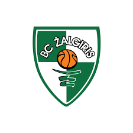

KAUNO ŽALGIRIS

Įkūrimo metai - 1944 m.
Komandos sąrašas
Vyriausias komandos treneris
JURE ZDOVC
Komandos žaidėjai
- Taib Webster
- Marek Blaževič
- Lukas Lekavičius
- Josh Nebo
- Mantas Kalnietis
- Regimantas Miniotas
- Paulius Jankūnas
- Karolis Lukošiūnas
- Mantas Rubštavičius
- Artūras Milaknis
- Janis Strelnieks
- Tyler Cavanaugh
- Niels Giffey
- Joffrey Lauvergne
- Edgaras Ulanovas
Daugiau informacijos apie komandą čia
<Grįšti į komandų sąrašą